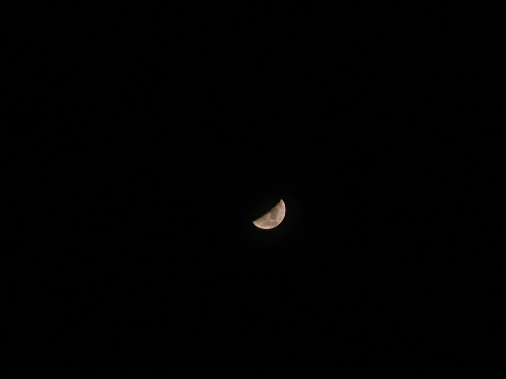
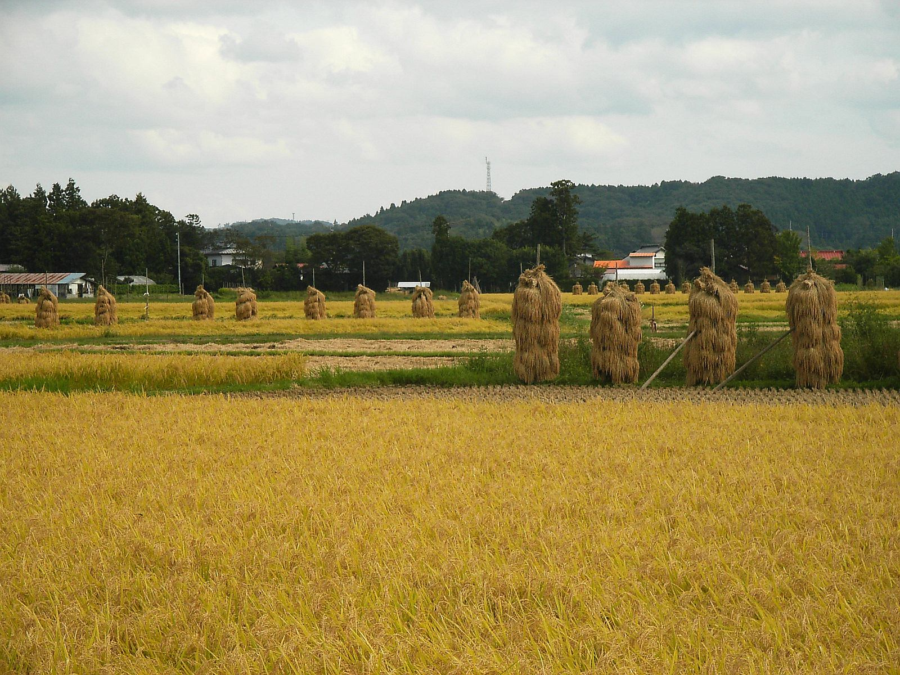
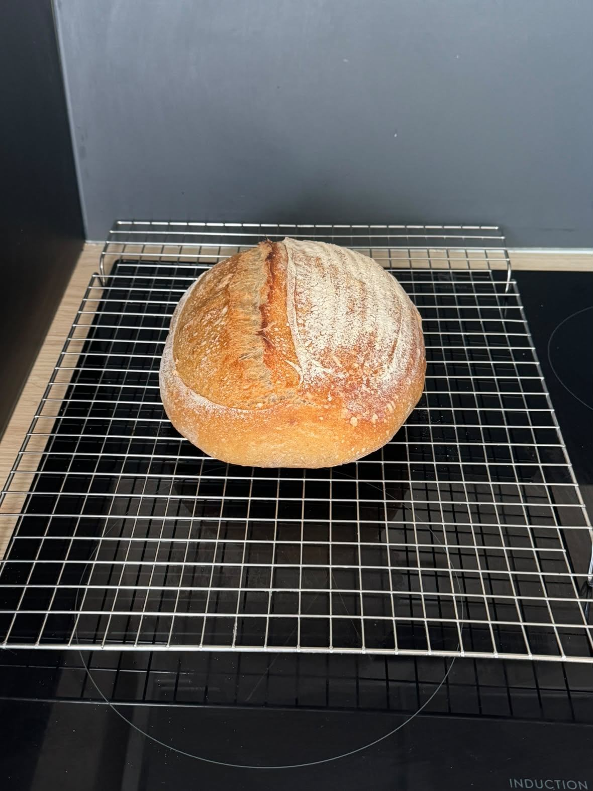
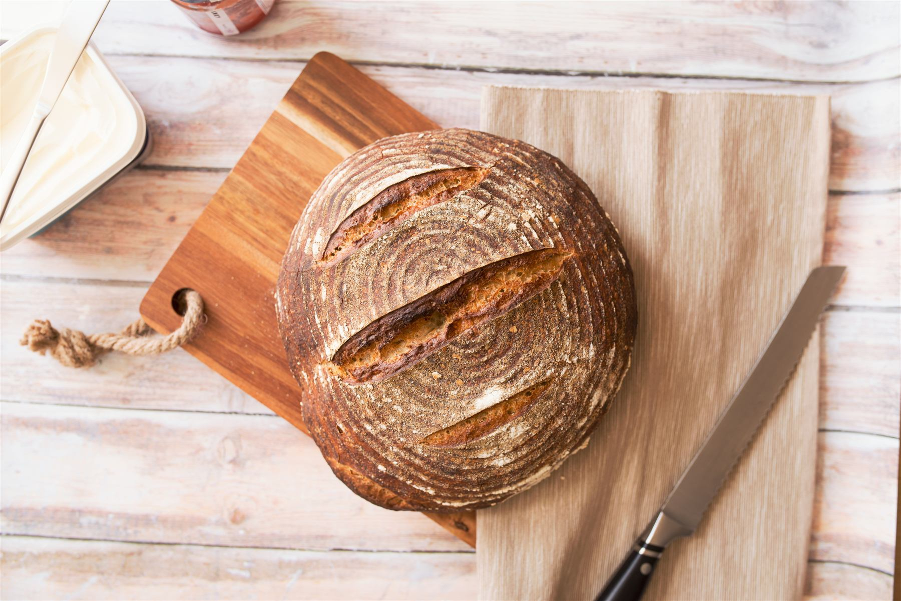

夜明け前
ぱんや つきあかり
里山の夜が明ける前、小さな窯にそっと火が入ります。
畦道の先、里山の奥にひっそりと窯を構えるパン屋です。
最新の営業状況・焼き上がり情報はInstagramにてご確認ください。
- 宮城県登米市東和町、里山の中の小さなパン屋
- Instagramで焼き上がりをお知らせ
- 静かな環境でひとつひとつ、ていねいに

里山の窓から
里山の時間
朝霧の水田、木のぬくもり、そして月の光。登米市東和町の里山に流れる時間を、写真でそっとお届けします。
-

焼きたてパンのイメージ -

木のぬくもり(イメージ) -

里山の棚田(イメージ)
静かな夜のうちに
お客様の声
里山のパン屋という特徴から想定した、お客様の声のイメージ例をご紹介しています。
※イメージ例です
訪ねてくるひとへ
アクセス
宮城県登米市東和町米谷相川、山あいの静かな道の先にあります。最新情報はInstagramで、道順はGoogleマップでご確認いただけます。
日本、〒987-0902 宮城県登米市東和町米谷相川9